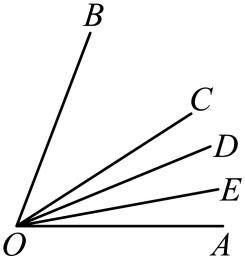
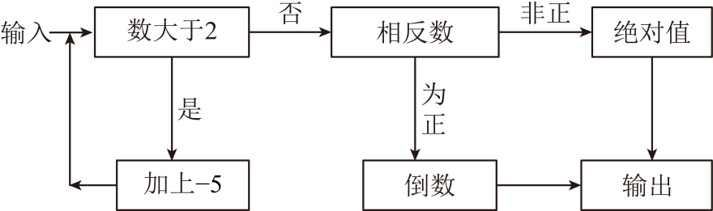
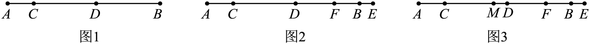

七年级数学上学期第二次月考·拔尖卷
【北师大版2024】
测试范围：第1章 丰富的图形世界~第5章 一元一次方程
姓名：___________班级：___________考号：___________
考卷信息：
本卷试题共26题，单选10题，填空6题，解答10题，满分150分，限时120分钟。本卷题型针对性较高，覆盖面广，选题有深度，可量化学生的掌握程度！
一、选择题（本大题共10小题，每小题4分，满分40分）
1．（25-26七年级上·辽宁大连·期中）若x=3，y=1，且x+y=x+y，则2x−y=（ ）
A．5或−7 B．−5或−7
C．5或7 D．−5或7
2．（25-26七年级上·安徽合肥·期中）有一个两位数，十位上的数字是 a， 个位上的数字是 b， 将十位上的数字和个位上的数字颠倒，得到一个新的两位数，那么新数与原数的差用代数式表示为（ ）
A．0 B．11b−9a C．9a−9b D．9b−9a
3．（25-26七年级上·河北石家庄·期中）有两根木条，一根AB长为80cm，另一根CD长为130cm，在它们的中点处各有一个小圆孔M、N（圆孔直径忽略不计，M、N抽象成两个点），将它们的一端重合，放置在同一条直线上，此时两根木条的小圆孔之间的距离MN是（ ）

A．105cm B．20cm C．105cm或25cm D．105cm或20cm
4．如图，在∠AOB内部有三条射线OC、OD、OE依次分布，若∠DOE=16°，∠AOE=13∠AOC，∠AOD=13∠AOB，则∠BOC=（ ）

A．24° B．32° C．42° D．48°
5．（24-25七年级下·重庆万州·月考）若不论k取什么数，关于x的方程2kx+m3−x−nk6=1（m、n是常数）的解总是x=1．则m+n的值是（ ）
A．−0.5 B．−1.5 C．0.5 D．15
6．（25-26七年级上·江苏·阶段练习）“幻方”最早记载于公元前500年的《大戴礼记》中，如图1所示，每个三角形的三个顶点上的数字之和都与中间正方形四个顶点上的数字之和相等，现将−1，2，−2，−4，5，−5，6，8填入如图2所示的“幻方”中，部分数据已填入，则图中a+b+c−d的值为（ ）

A．15或−5 B．5 C．−15 D．−5
7．已知关于x的一元一次方程x2023+a=2023x的解是x=2022，关于y的一元一次方程b2023+2023c=−a的解是y=−2021（其中b和c是含有y的代数式），则下列结论符合条件的是（ ）
A．b=−y−1,c=y+1 B．b=1−y,c=y−1
C．b=y+1,c=−y−1 D．b=y−1,c=1−y
8．（24-25七年级上·四川成都·期末）如图，∠AOB=120°，在∠AOB内作两条射线OC和OD，且OM平分∠AOD，ON平分∠BOC，若∠AOC:∠COD:∠DOB=5:3:4，则∠MON的度数为（ ）

A．45° B．50° C．55° D．60°
9．（24-25七年级上·河北邯郸·期中）定义：如图1，点C在射线AB上，图中共有三条线段AB，AC和BC，若其中有一条线段的长度是另外一条线段长度的2倍，则称点C是线段AB的“美点”．如图2，已知AB=24cm，动点P，Q分别从点A，B同时出发沿AB相向运动，速度分别为2 cms，1 cms，当点P到达点B时，运动停止．设点P的运动时间为ts，当点P恰好是线段AQ的“美点”时，t最大值与最小值的差为（ ）

A．185 B．65 C．247 D．607
10．（25-26七年级上·浙江绍兴·期中）将3，4，5，6，7，8六个数随机分成两组，每组3个，分别用a1，a2，a3和b1，b2，b3表示，且a1<a2<a3，b1>b2>b3，设m=a1−b1+a2−b2+a3−b3，则m为（ ）
A．10 B．9 C．7或9 D．9或10
二、填空题（本大题共6小题，每小题4分，满分24分）
11．（24-25七年级上·江西赣州·阶段练习）若多项式n−3xm+2−n−2x5−m+3 是关于x的三次多项式，则多项式m+n的值为 ．
12．（25-26六年级上·上海崇明·期中）a、b、c是三个非零自然数，且89×a=123×b=67×c，那么a、b、c按照从小到大的顺序用“＜”排列应是 ．
13．（25-26九年级上·浙江杭州·期中）如图，一条数轴上有点A、B、C，其中点A、B表示的数分别是−12，10，现以点C为折点，将数轴向右对折，若点A落在射线CB上且到点B的距离为4，则C点表示的数是 ．

14．（25-26七年级上·浙江嘉兴·期中）如图，下边横排中有无数个方格，每个方格中都有一个数字，且任意相邻三个格子中数字之和都相等．已知，第1个方格中的数字是5，第9个方格中的数字是−6，前101个方格中的数字之和是74，则第101个方格中的数字是 ．
5 | -6 | … |
15．（25-26七年级上·辽宁沈阳·期中）如图，已知∠AOB=135°，∠COD=45°，当∠COD在∠AOB的外部时，分别在∠AOC内部和∠BOD内部画射线OE，OF，使∠EOC=13∠AOC，∠DOF=13∠BOD，则∠EOF的度数为 ．
16．已知C为线段AB上一点，D为AC的中点，E为BC的中点，F为DE的中点，则EFAB= ．若AB=16CF，则ACBC= ．
三、解答题（本大题共10小题，满分86分）
17．（6分）（24-25七年级上·陕西·阶段练习）如图，是一个“有理数转换器”（箭头是指数进入转换器的路径，方框是对进入的数进行转换的转换器）

(1)当小明输入3、95、−2027这三个数时，这三次输出的结果分别是_______；_______；_______．
(2)你认为当输入什么数时，其输出结果是0?
(3)你认为这个“有理数转换器”不可能输出什么数?
18．（6分）（25-26七年级上·重庆·期中）定义：对于n个关于x的一次整式A1,A2,…,An，若存在均不为零的数k1,k2,⋯,kn，使k1A1+k2A2+⋯+knAn=a，其中a是常数．则称这n个一次整式为常数a的“相关整式”．例如：对于一次整式x−4，−3x+8，−x−1存在k1=1，k2=−1，k3=4，使x−4−−3x+8+4−x−1=−16，所以一次整式x−4，−3x+8，−x−1为常数−16的“相关整式”．
(1)若整式A1=x，A2=3x+1，A3=x+4为常数a的“相关整式”，其中k1=k2=1，则常数a=________，k3=________；
(2)若整式A1=px+q，A2=x+1，A3=−23x+13为常数2的“相关整式”，其中k1=1，k2=−1，k3=3，求p，q的值；
(3)已知整式A1=x+3，A2=cx−6，A3=mx+7，若整式5x2yc−2x+A2是关于x，y的四次三项式，且A1,A2,A3为常数0的“相关整式”，求出m的值．
19．（6分）（25-26七年级上·重庆·期中）已知两个正整数m和n各个数位上的数字均不为0，若它们的位数相同且对应数位上的数字之和为10，称这两个数互为“互补数”．例如：4和6互为“互补数”，119与991互为“互补数”．若m的“互补数”为n，记Pm=m−n为m的“互补差”，例如：81的“互补数”为29，P81=81−29=52．
(1)42的“互补差”为 ；
(2)已知两位数m的个位数字比十位数字大3，且它的“互补数”n等于它的175倍，求这个两位数的“互补差”Pm；
(3)已知某三位数6ab（其中1≤a，b≤9，且a，b为整数），若P6ab能被19整除，直接写出这个三位数6ab所有可能的值．
20．（8分）（25-26七年级上·黑龙江哈尔滨·期中）为了鼓励市民节约用水，某市居民生活用水按阶梯式水价计费．下表是该市“一户一表”生活用水阶梯式计费价格表的部分信息：（说明：①每户产生的污水量等于该户自来水用量；②水费＝自来水费用＋污水处理费）
自来水销售价格 | 污水处理价格 | |
每户每月用水量 | 单价：元/吨 | 单价：元/吨 |
10吨及以下 | 2.5 | 0.50 |
超过10吨但不超过25吨的部分 | 3 | 0.50 |
超过25吨的部分 | 4.5 | 0.50 |
(1)已知小李家2025年7月用水8吨，应该交水费多少元？
(2)如果小李家9月份交水费40.5元，则小李家这个月用水多少吨？
(3)小李家10月份忘记去交水费，当他11月去交水费时发现两个月一共用水40吨（其中10月份用水超过25吨），一共交水费136元，求小李家11月份用水多少吨？
21．（8分）（24-25七年级上·湖北孝感·期末）已知线段AB上的两点C、D，点D为线段BC的中点，AD+CD=12．

(1)如图1，求线段AB的长；
(2)如图2，点E在AB的延长线上，点F在线段BD上，满足CD=2BF+BE，则点F是否为线段DE的中点？请作出判断，并说明理由；
(3)如图3，在（2）的条件下，BE= 12 AC，点M为AB的中点，MF=4，求AC的长．
22．（8分）（25-26七年级上·陕西咸阳·阶段练习）阅读理解：数轴是一个非常重要的数学工具，使数和数轴上的点建立起对应关系，这样能够用“数形结合”的方法解决一些问题．

数轴上，若A，B两点分别表示数a、b，那么A，B两点之间的距离与a，b两数的差有如下关系：AB=a−b或b−a、如5−3表示5、3在数轴上对应的两点之间的距离．
问题（1）数轴上表示1和−3的两点之间的距离是________，
问题（2）已知a+2=4，则a=________；
问题（3）当a满足________时，则a+5+a−3的值最小，最小值是________；
问题（4）若x+1+x−a的最小值是5，求a的值．
问题（5）当a=________时，a+1+a−2+a−6的最小值是________；
23．（8分）（25-26八年级上·重庆·阶段练习）用一元一次方程解答下列问题．
当前，重庆正加速打造智能网联新能源汽车之都，同时重庆也是全国三个机动车保有量超过600万辆的城市之一，消费潜力巨大．某4S汽车销售店顺应浪潮，9月份主推了A款燃油车和B款新能源汽车，已知该4S店销售1辆A款燃油车和1辆B款新能源汽车的总销售额为40万元，销售3辆A款燃油车、2辆B款新能源汽车的总销售额为96万元．
(1)求9月份每辆A款、B款汽车售价分别为多少万元？
(2)因为每种车型销售热度不一，所以源头厂家一直保持严格的配货制度，即该4S店每引进2辆B款新能源汽车则必须引进1辆A款燃油车．该4S店9月份引进的A款燃油车和B款新能源汽车全部销售一空，其中引进了B款新能源汽车40000辆．10月份由于新能源汽车电池成本大幅提高，与9月份相比，每辆B款新能源汽车售价提高了2a%，同时为了响应国家的号召，对B款新能源汽车每辆进行4万元的现金补贴，每辆A款燃油车的售价则保持不变，最终10月份的A款燃油车销量相比9月份A款燃油车的销量降低了a%，B款新能源汽车销量相比9月份B款新能源汽车销量提高了15，10月份两款车的总销售额比9月份两款车的总销售额提高了31%，求a的值．
24．（10分）综合与探究
如图1，这是一个“数值转换器”的示意图，请根据图中的信息，解答下列问题．

(1)当输出的值y=9时，求输入的x的值．
(2)若关于z的方程3(z+1)−12(z−1)=2(z−1)−12(z+1)的解为z=2a，则当输入的值x=−a2+a+5时，输出的值y为多少？
(3)如图2，这是一个六边形，已知AB+BC+CD=AF+FE+ED，大、小蜗牛同时从点A出发，小蜗牛沿着A→B→C→D的路线爬行，大蜗牛沿着A→F→E→D→C的路线爬行．若（2）中输出的y的值为b，5|b|12秒后，大、小蜗牛在与点D相距0.2米的点G处相遇，已知小蜗牛的速度是大蜗牛的57，求六边形ABCDEF的周长．
25．（12分）（25-26七年级上·四川成都·期中）小明在“几何画板”上设计了一个数轴上的动点程序，该动点在数轴上沿正方向运动，他把观察到情况记录如下：
观察时间 | 数轴上动点所到的数字情况 |
8：00 | 是一个两位数字，它的两个数字之和为7． |
9：00 | 十位与个位数字与8：00时所看到的正好颠倒了． |
10：00 | 比8：00时看到的两位数中间多了个0． |
如果设小明在8：00时看到的数的个位数字是x，那么根据以上信息回答下列问题：（结果均要化简）
(1)8：00时小明看到的数可表示为___________；（用含x的代数式表达）；
(2)请分别求出求8:00∼9:00间和9:00∼10:00间，该动点在数轴上分别运动了多少距离？（用含x的代数式表达）
(3)若该动点为匀速运动，将8:00时该点在数轴上的位置记为A,9:00时该点在数轴上的位置记为B,10:00时该点在数轴上的位置记为C，数轴上有点M，使得MA+MB+MC=130，直接写出点M在数轴上表示的数．
26．（14分）定义：从一个角的顶点出发，在角的内部引两条射线，如果原角是这两条射线所成的角的n倍，那么原角叫做这两条射线所成的角的n倍角．如图1，若∠AOB=2∠COD，则∠AOB是∠COD的两倍角．

(1)如图1：已知∠AOB=70°，∠AOC=25°，∠AOB是∠COD的两倍角，则∠BOD=___________；
(2)如图2：已知∠AOB=75°，将∠AOB绕点O按顺时针方向旋转一个角度α0<α<75°至∠COD，当旋转的角度α为何值时，∠AOD是∠COB的三倍角．
(3)已知∠AOB=30°，把一块含有30°角的三角板如图3叠放，将三角板绕顶点O以2度/秒的速度按顺时针方向旋转（如图4）．问：在旋转一周的过程中，射线OA，OB，OC，OD能否构成三倍角？若能，请求出旋转的时间：若不能，请说明理由．